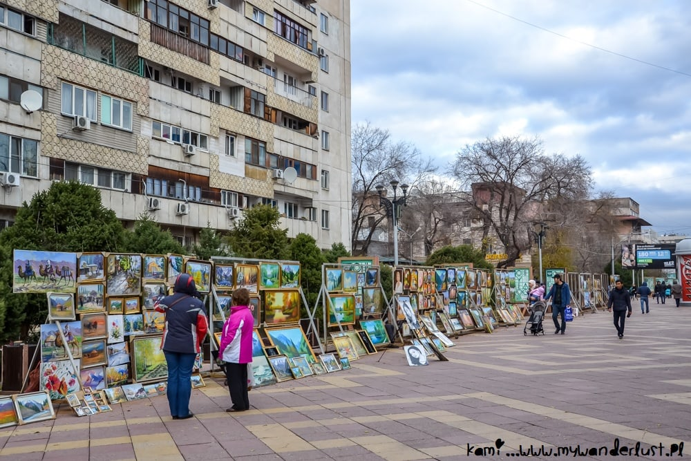

Medeu
Medeu is the highest located ice skating rink in the world, situated in the mountains at the elevantion 0f 1991 meters.
While the ice skating can only be undertaken during the winter, the surrounding area is an impressive sightseing location.
Shymbulak
From Medeu, a cable car to the Shymbulak ski resort can be taken. Shymbulak is a popular skiing location with breathtaking sights of the Tian Shan mountains.
The last of the cable cars rises to the height of 3200 meters above th sea level and offer an increbible view of the city's landscape from bird-eye's perspecive.
Arbat
The Arbat street is a pedestrian street in the city center that serves as a favorite promenade location for both locals and tourists alike.
Together with the now-pedetrain Panfilova street, informally called "New Arbat" by local citizens that forms a T-shaped interesction with the southern part of the street,
Arbat constitutes a vast and lively pedestrain area, lined with dozens of cafes and shops. It is a place one can vizit to listen to street musicians,
lunch in a cozy and unusual cafe, and buy accessories and charms from small merchants.

Botanical Garden
Botanical Graden is located next to the Kazakh National Univercity and features a vast collection of plants from various regions.
It is a large park-like green zone that enbles its vizitors to experience a walk in a forest without leaving the city.
Its most scenic location is the Japanese Garden, a tranquill place perfect for both promenades and photoshoots.
Zenkov Cathedral
The Zenkov Cathdral is located in the Park of 28 Panfilov Guardsmen. It is the second tallest wooden building in the world.
This truly unique cathedral was built without a single nail and is one of the finest examples of wooden architechture constructed by man.